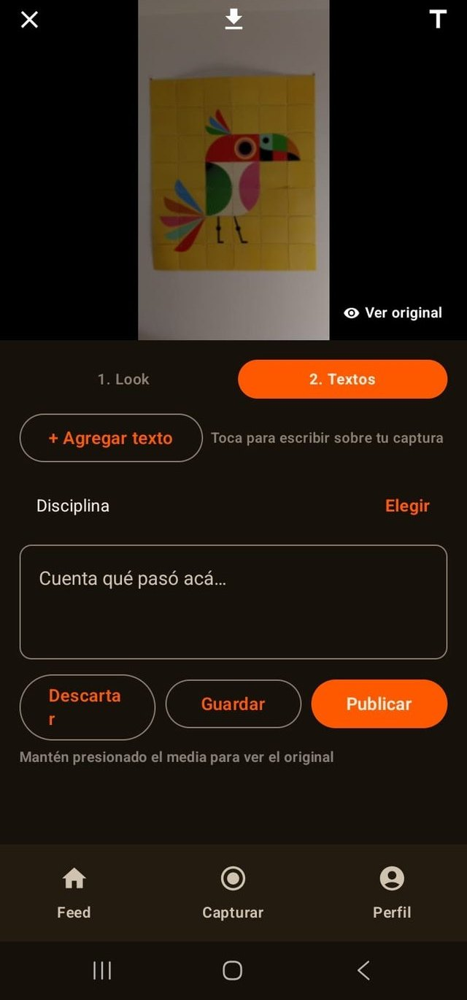
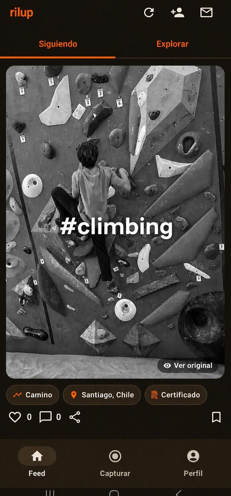
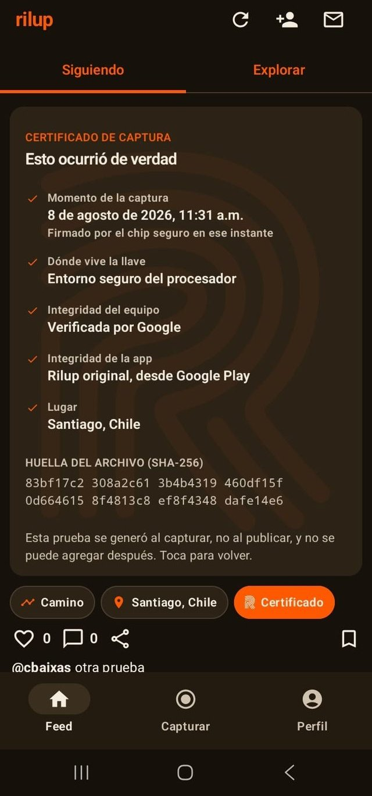
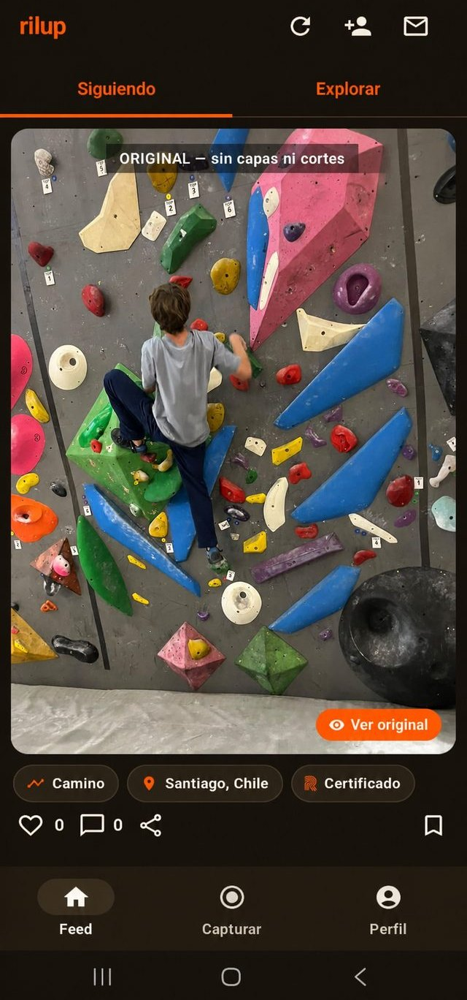
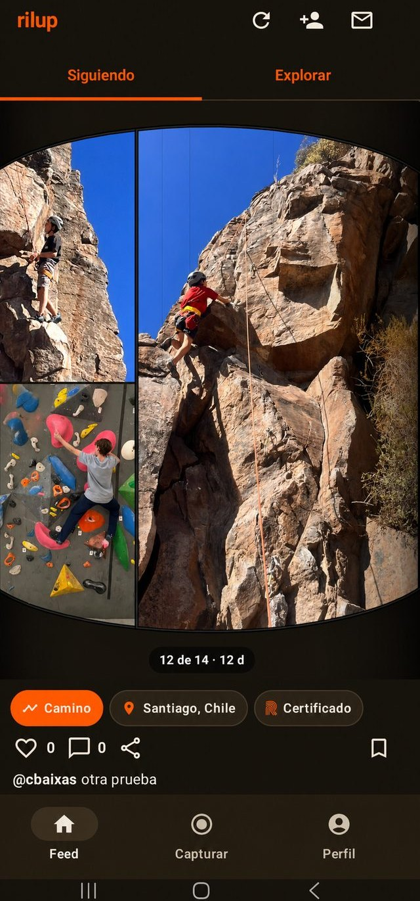
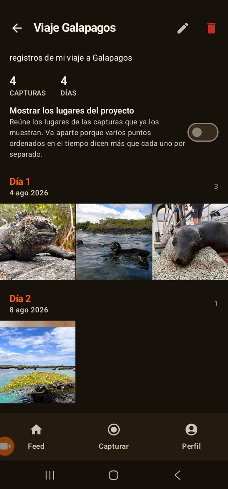
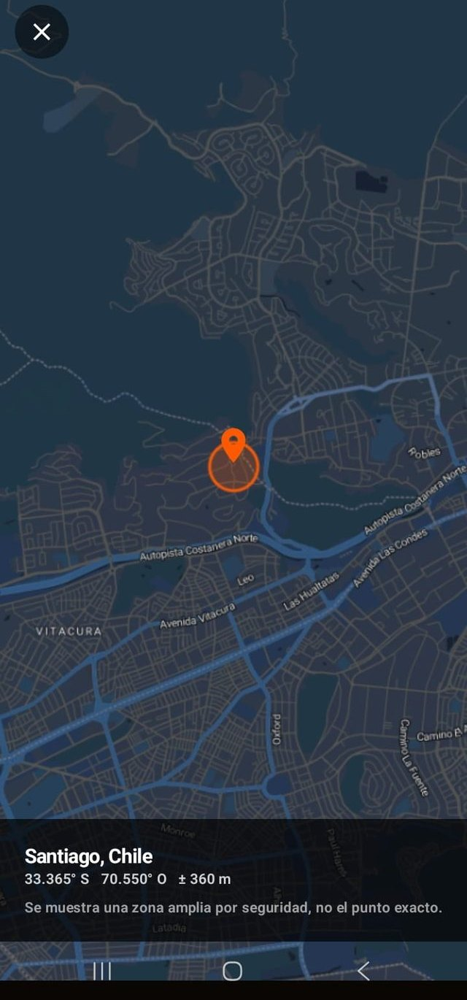
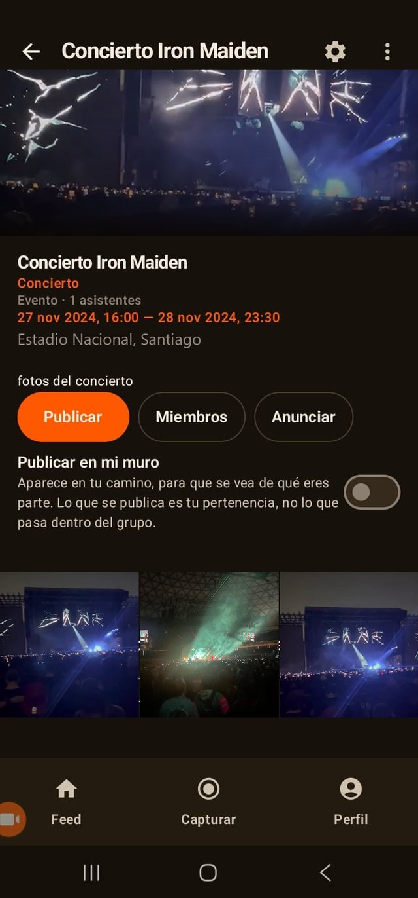

Guía
Todo lo que puedes hacer en Rilup
Rilup es una red social: publicas, sigues gente, comentas. Lo que cambia es que acá nada se sube, todo se captura, y cada captura llega con la prueba de cuándo ocurrió.
Esta guía recorre las funciones una por una. Al lado de cada una está lo que ninguna otra red puede ofrecer, que casi siempre es la misma cosa dicha de otra forma: acá el dato no lo escribe nadie.
01
Capturar
Abres la cámara dentro de la app y grabas foto o video. Eso es todo, y eso es lo único. No hay galería, no hay «subir archivo», no hay importar desde otra parte.
Puedes tomar varios intentos y decidir después cuál publicas. Los que no publicas quedan solo en tu teléfono.
Por qué es distinto: en cualquier otra red, la cámara es una comodidad y la galería es la puerta real. Acá no existe esa puerta, y por eso todo lo demás se puede afirmar.

02
El sello
Al capturar, la app le pide a Google un veredicto de que es la app oficial, sin modificar, en un teléfono íntegro, y registra la huella criptográfica del archivo. Al publicar, el servidor recalcula esa huella sobre lo que llegó: si no calza byte a byte, no se publica.
El resultado es el sello que ves junto a cada publicación.
Por qué es distinto: no es una insignia que se compra ni que se solicita. Es el resultado de una comprobación que ocurrió sola, en el instante del disparo.

03
El certificado
Toca el sello y la publicación se da vuelta. Atrás está lo que se sabe de ella: el momento de la captura en la hora de quien la tomó, si la firmó una llave de hardware y de qué nivel, si el equipo y la app estaban íntegros, y, si su autor quiso, dónde ocurrió.
Cuando algo no se pudo comprobar, lo dice. No dice que falló.
Por qué es distinto: las otras redes te piden que confíes. Acá puedes dar vuelta la foto y leer la prueba, incluida la parte que no sabemos.

04
Ver original
Puedes editar: recortar, ajustar exposición, poner textos, aplicar un look de color. Nada de eso toca el archivo capturado; se guarda como capas que se aplican al reproducir.
Por eso cualquiera puede mantener presionada una publicación y ver la captura cruda, tal como salió del sensor.
Por qué es distinto: en el resto de las redes, editar destruye el original y nadie puede comprobar qué había antes. Acá el original sigue ahí, y no es un privilegio del autor: lo ve cualquiera.

05
Tu camino
Cada publicación tuya es un paso de algo más largo. Toca «Camino» y la foto se encoge y se mete en un carrete que puedes rodar hacia los lados, con lo que hiciste antes y después.
Ahí también aparecen tus proyectos, y los clubes y eventos que elegiste mostrar.
Por qué es distinto: las otras redes te muestran momentos sueltos, cada uno peleando por parecer el mejor. Un camino muestra la insistencia, que es lo que de verdad cuesta y lo único que no se puede improvisar.

06
Proyectos
Agrupa capturas en un proyecto y quedan ordenadas por jornada, con los días contados desde la hora firmada de cada una. Arriba, un resumen: cuántas capturas, cuántos días, cuántos lugares y cuánto recorriste.
Si lo activas, se dibuja además el mapa con el recorrido que hiciste.
Por qué es distinto: esos números no los escribió nadie. Salen de las mismas firmas que prueban cada captura, así que un proyecto de nueve días no puede decir que fueron nueve meses.

07
El lugar, si tú quieres
La ubicación viene apagada. Si la enciendes, lo que se publica es una zona de unos 500 metros, nunca tu punto exacto, y se dibuja como un círculo sobre el mapa para que quede claro que es una zona y no una dirección.
Puedes definir zonas privadas donde la app no adjunta ubicación jamás, como tu casa.
Por qué es distinto: otras redes guardan tu coordenada exacta aunque no la muestren. Acá el redondeo ocurre antes de guardarla, así que el dato preciso no existe en ninguna parte.

08
Clubes y eventos
Crea un club para tu grupo, o un evento con su fecha, su lugar y su radio. Las capturas de los asistentes entran al álbum del evento, y las que ocurrieron dentro de su horario y su lugar llevan además la marca de verificadas en el evento.
Puedes elegir que lo publicado dentro se quede dentro.
Por qué es distinto: el álbum de un evento en cualquier otra red contiene lo que la gente dice que es de ese evento. Acá la pertenencia se comprueba sola, con la hora y el lugar de la captura. Nadie etiqueta nada.

Vuelve a lo real.
No estamos contra la inteligencia artificial. Nos parece una herramienta extraordinaria. Solo creemos que lo real merece un lugar propio donde brillar sin tener que defenderse.
Android. Gratis, sin anuncios.
Y todo lo que ya esperas de una red social
Sigues a quien te interesa y tu feed es de ellos, en orden cronológico, sin un algoritmo decidiendo por ti. Comentas, guardas, mandas mensajes, buscas por disciplina y descubres gente en Explorar.
Y si alguien te molesta, lo bloqueas y deja de existir para ti en los dos sentidos, o lo denuncias y lo revisa una persona.
Por qué es distinto: nada de esto es novedoso, y no debería serlo. Lo que cambia no es cómo se usa una red social, es qué tan cierto es lo que hay dentro.